Started with loading as a topic rather than with sketches, because determinate and indeterminate is not a style choice. It is a claim about what the system knows.
How long is the wait
The threshold picks the type. One catch: hold the indicator back about half a second past the limit, because flashing a spinner at work that finishes quickly makes the interface feel slower. Knowing when not to appear is part of the job.
Determinate or indeterminate
Determinate
Indeterminate
Claims
This much is done
Something is happening, length unknown
Use when
The system can count, past 10 s
Short waits, or nothing countable
Must
Track the real thing, never reassure
Never stall
Screen reader
role="progressbar" plus live aria-valuenow
Same role, aria-valuenow left out
As soon as progress becomes knowable, an indicator should move from the right column to the left. Direction is fixed too: linear runs leading edge to trailing, circular starts at the top and turns clockwise.
Why the same wait feels different
Finding
Source
What I take from it
Backwards ribbing that decelerates cut perceived duration about 11 percent
Harrison and others, 2010
Motion direction is a lever, not decoration
More, smaller steps read as faster; fewer, larger steps stretch the wait
Ziat and others, 2022
Step granularity is a tone control
A skeleton previews the layout, a spinner spotlights the delay
Repeated everywhere, no controlled study
Trust the direction, not the 30 percent figure
Rules the tone has to survive
Rule
What it forces
Keep moving
A frozen loader reads as a frozen app
Stay proportional
Small update, small indicator
Speak plainly
“Saving changes”, not “API request pending”
Offer a way out
Cancel on long work, when it is safe
Do not block
Let background work run and report back
Never motion alone
Status needs text, and has to park under reduced motion
Pattern survey
Sixteen existing patterns on one shared clock, so the same real duration can be compared across forms. The last group separates form from placement: a button state and an inline state are the same shapes put somewhere specific.
Live demo. Interact with it here or view it larger.
At 10 seconds the numeric readout is the most precise and the least bearable, because there is nothing to watch between updates. The segmented bar at 20 steps feels quicker than the smooth bar over an identical duration, exactly as the study predicts.
Into the designs
Both halves of a set share a tone, not a shape. A bar squeezed into a circle is not the same indicator.
Granularity, easing, and direction are where tone lives, and critique can argue with all three.
Each set needs a named context, because an indicator has no tone without something to be the tone of.
Status text is part of the design. Three tones should produce three different sentences.
Process
Next: three tones, named with their contexts, then sketches before any code.
Ideation
Loose sketches before the three tones are picked. Each one runs live in its box.
Ball chainA circle sweeps under fifteen hanging chains; only the ones it touches sway.Bar and ballA circle slides end to end along a thin bar.StarEight rays; a circle runs out and back on each in turn, so the pulse goes round.EdgeThe screen edge is the bar, filling clockwise while the number counts.RallyA ball rallied at you down the middle, then out to the left and right.GlowOne box slowly brightens and fades, like a light breathing.HourglassAn hourglass of grains; only the falling stream moves.WashColour washes across the whole screen from the left.Wash, ripplingThe same wash, its front swaying like water.TapA film still in grey dots; only a finger taps, on and on.StairwellAfter In the Mood for Love: a figure climbs into a red gap, step-printed. View it larger for the controls.CorridorA box's back wall draws away into a long hall; its depth is the progress.GustA spinner of particles shaped like a gust of wind.ReedsRows of tall bars ripple on slow sideways waves.Reeds, flatReeds pressed flat: split lines draw one rolling wave.BounceOne ball bouncing in place, stretching and squashing.Rose trailA comet of dots runs round a breathing seven-petal rose.Ripple dotsA halftone ring whose dots swell outward in waves.EclipseA dark disc with a shimmering, two-layer halo.TwistStrands of light wind into a rope round a turning ring, then unwind.VortexStreaks of light whirl round a black sphere.BloomThousands of specks on a ball that crumples and opens like a flower.Line countLine fragments snap together to build the count, 1 to 100.CrackFour panels parted by two wandering cracks; at the end they fly apart.Brush ringA dry-brush circle turning one way, then the other.Brush halvesTwo dry-brush half circles at the edges, turning together.SpiralGrains settle into a spiral round a circle; the spiral is the progress.CoilGrains wind round a tumbling hoop; the wrapped share is the progress.HatchTwo layers of slanted, stepped bars; the grey they leave open swells and shrinks, and where they overlap it goes black.HalftoneBoxes of halftone dots come up one by one from the right until the page is black.PhasesFour white circles swing back and forth round a diamond, swelling and shrinking a quarter turn apart.Ping-pongA glowing turn runs along a row of dot pairs and back; three at a time draw in on a smooth curve and join with lines.
Deliverables
Six indicators, a pair for each tone: one indeterminate, one determinate. Each tone shows how it got there, then the moving prototypes.
Nostalgic
Process
How the pair got here, one saved version at a time.
Determinate
A local train crossing the whole landscape: sky, tree line, poles and wires, a signal at the end of the line.Everything cut but the train and the field, with evening light and wind moving through the grass.An old steam engine and coaches, a post and a buffer stop to mark start and end, the percentage in the grass.Now: amber page, ragged field edges, shorter wheels, sooty smoke, a smaller figure.
Indeterminate
First view from inside: a wood-panelled wall, rack, handles and two boxy seats.Wall colour dropped for outline; the seats simplified to one line each.Seats drawn in full after a reference, a striped bench and a seat back. They floated, and read as props.Seats gone. Only lines that say train: window, sill, rack, a hanging strap.Now: no strap, and the window, sill and rack drawn in more careful line.
Prototypes
IndeterminateEvening fields passing the window of an old train, jolting now and then.DeterminateA steam train pulls out along a rice field; how much of it shows is the progress.
Serene
Process
How the pair got here from the Reeds sketch, one saved version at a time.
Determinate
First pass as pure graphic: thin bars on a bare page, growing one by one from the left into a soft wave.Back to the reeds field as it was, layered rows and wave, now in sage and mist inside a thin rounded frame, rising from the bottom.Rows lean closer as they rise, so at 100% every reed reaches the top of the frame.Frame outline and the white tips gone; the colours turned cool, teal over deep blue.Now: a slower fill, 11 to 18 seconds, and the back rows stand further above the front.
Indeterminate
First pass as pure graphic: two interlocking rows of bars under one long, slow wave.The reeds field kept whole, layers and wave, with rounded tips and a sage and mist palette in a thin frame.The whole field lowered so the tips sway around the middle of the frame, the top half left empty.Now: no outline, no white tips, cool teal and blue.
Prototypes
IndeterminateThe Reeds field in cool blues, softly blurred, rippling low and endlessly.DeterminateThe same soft reeds grow up the frame; at 100% every stem reaches the top.
Edgy
Process
How the pair got here from the Crack sketch, one saved version at a time.
Determinate
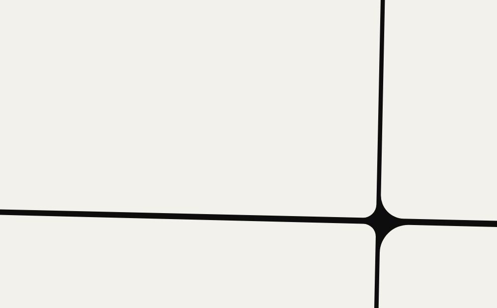
First try: the crossing driven from corner to corner.
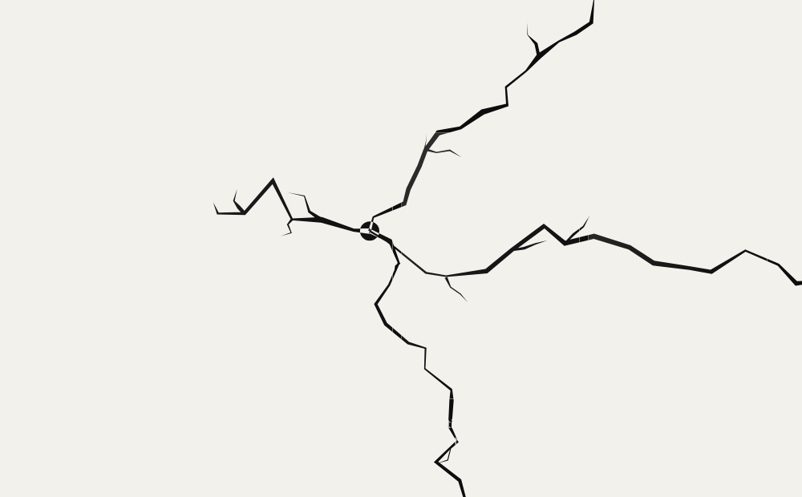
Four jagged arms, cracking one at a time in a jumbled order.
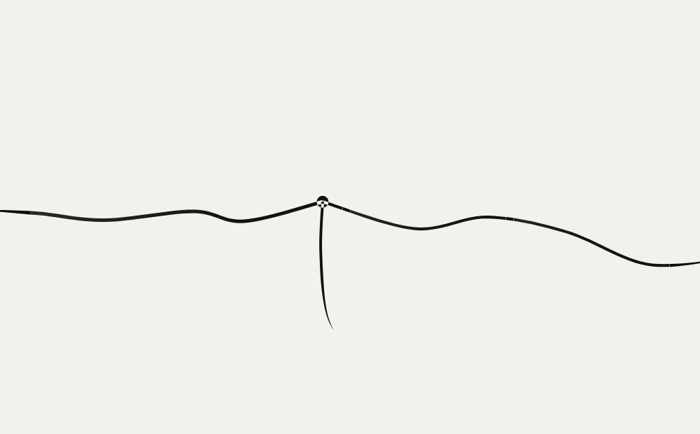
The same arms, made sleek.
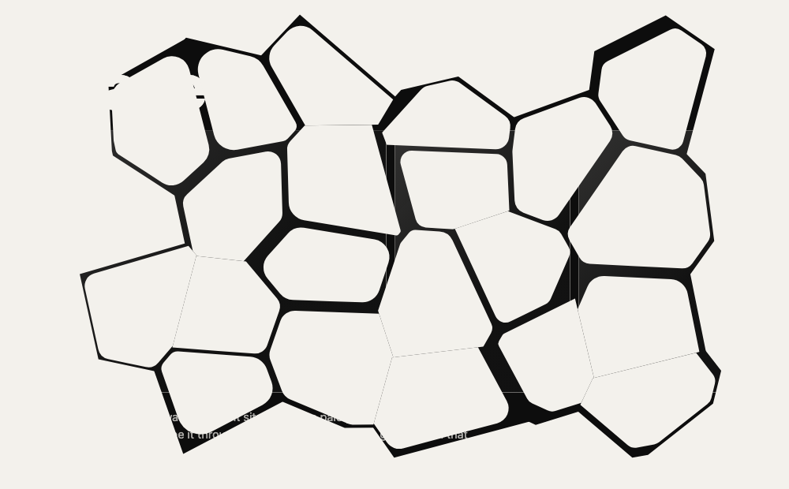
After a reference: pieces breaking off in rings.
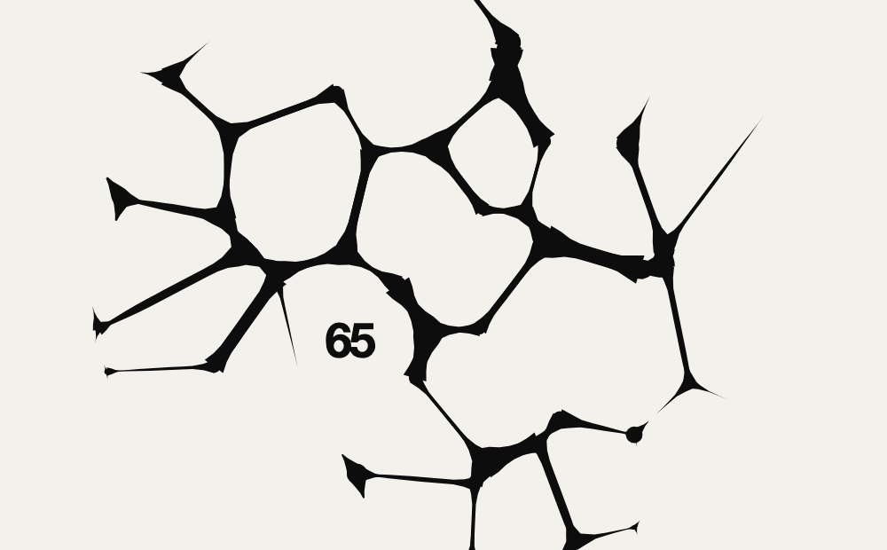
A crack that spreads from the middle like mercury, the percentage in one face.
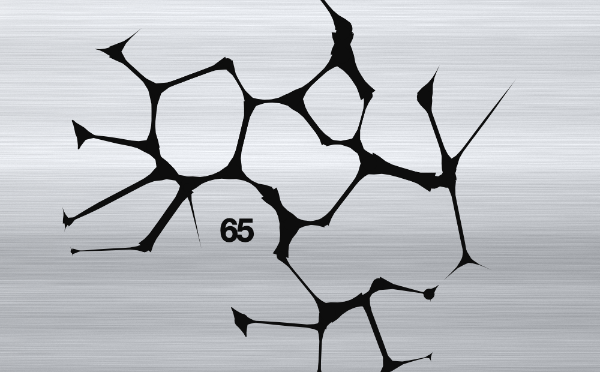
The panel in brushed metal.
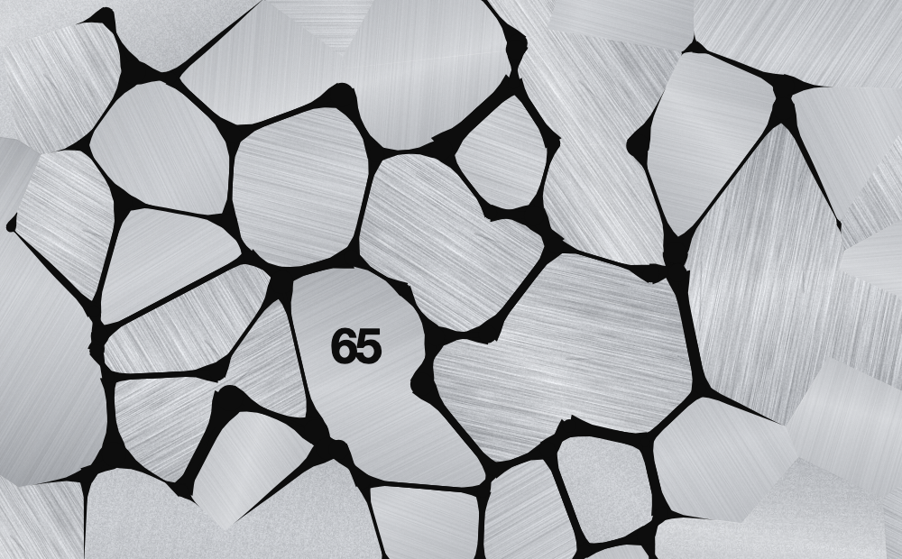
Plates, each brushed its own way.
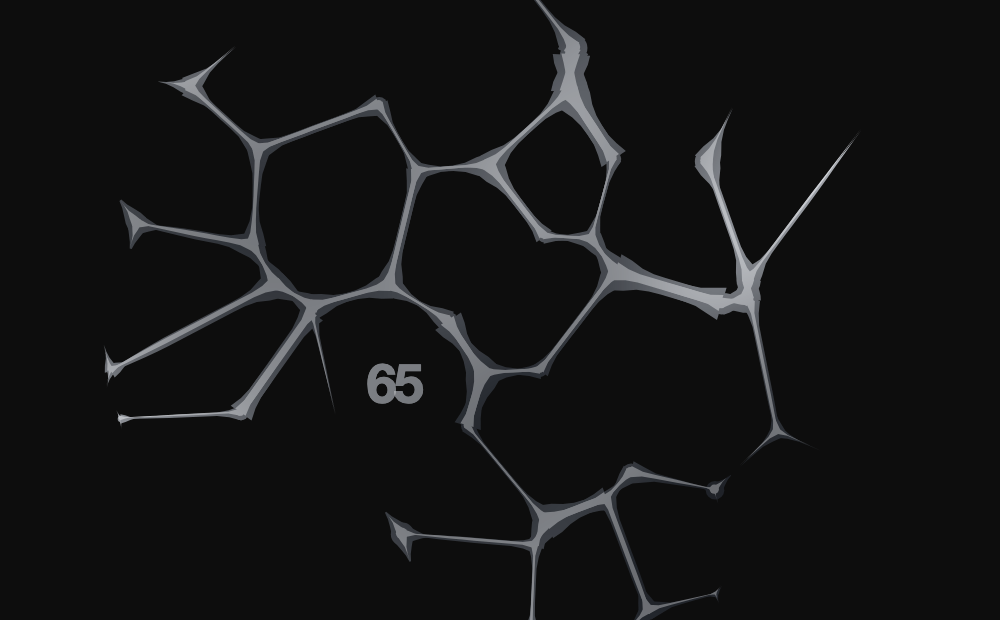
Inverted: a black panel, metal in the cracks.
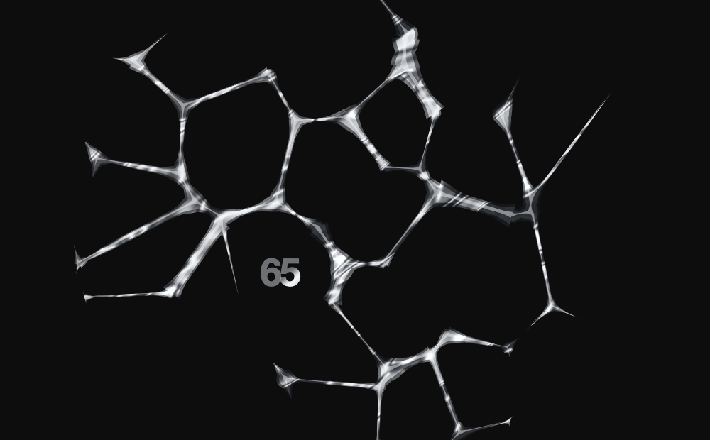
Liquid chrome after a reference.
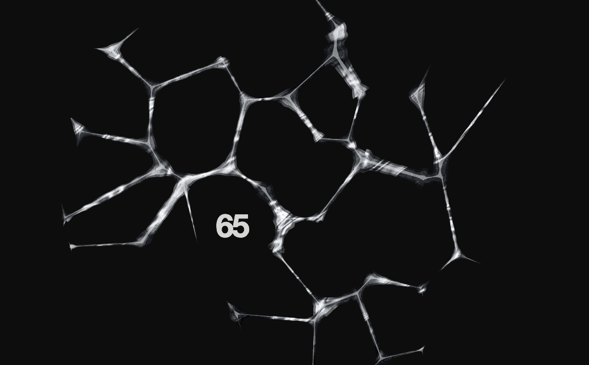
Metal only in the cracks, made raw.
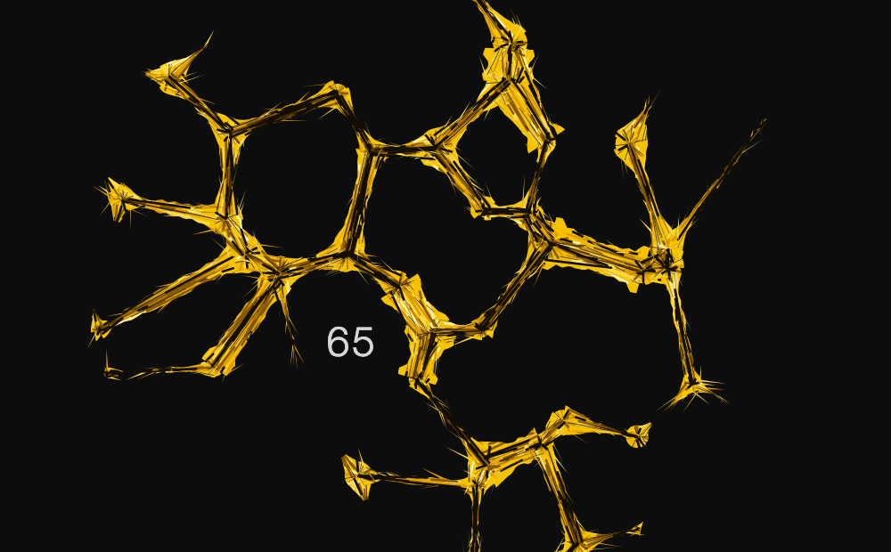
Now: rough yellow streaks along each crack, light figures.
Indeterminate
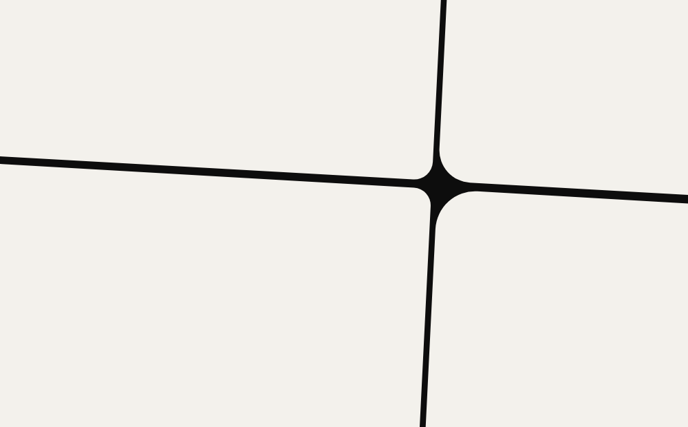
The Crack sketch as it was: pale panels.
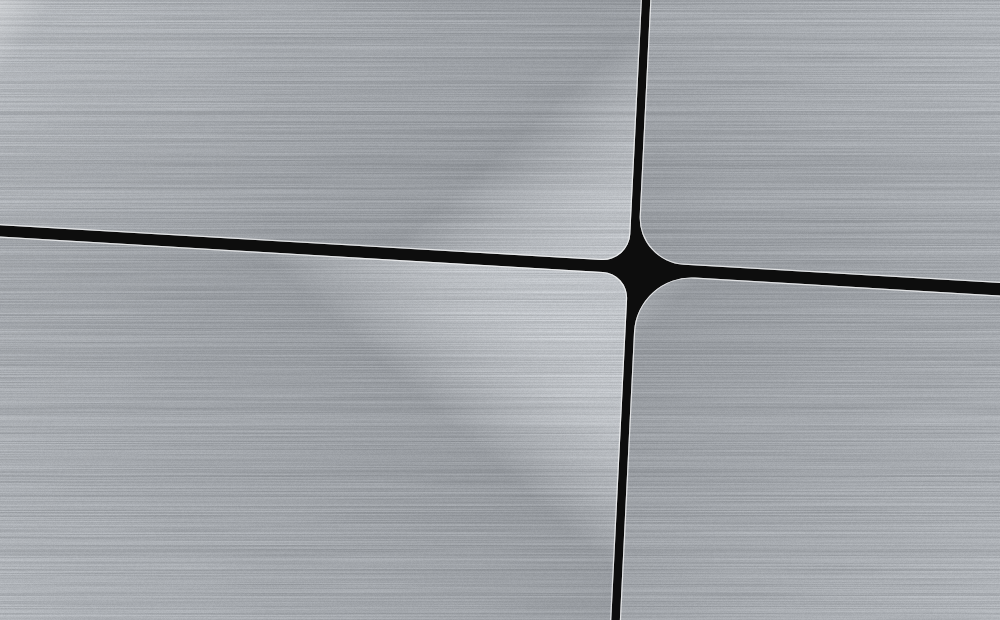
Brushed stainless steel.
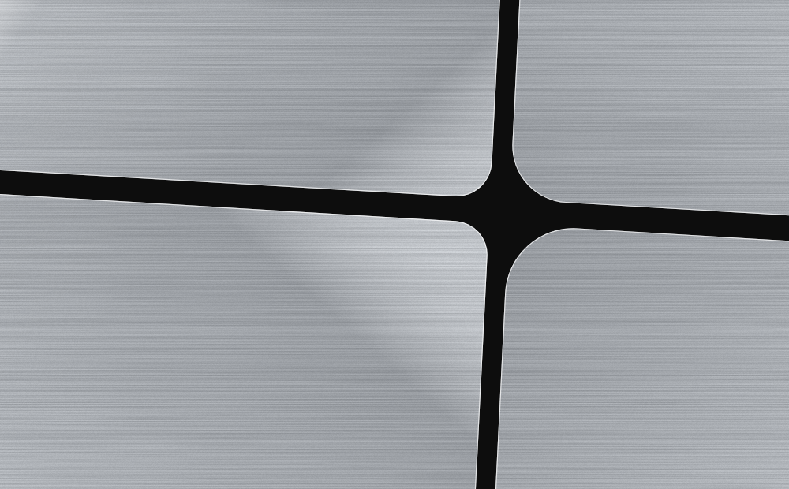
Bolder gaps between the panels.
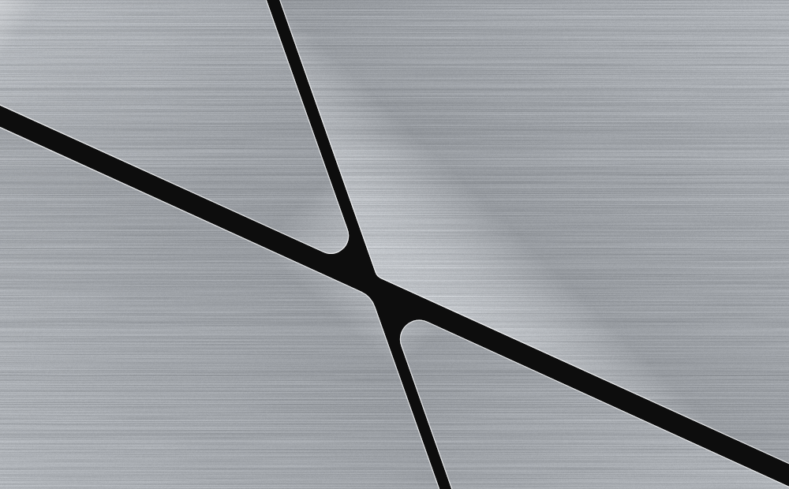
Now: each crack its own width and lean, so the gap turns tall, wide or rhombic.
Prototypes
IndeterminateThe Crack sketch in brushed stainless steel: four panels parted by bold, wandering cracks.DeterminateRough yellow cracks tear open from the middle; reaching every edge is 100%.